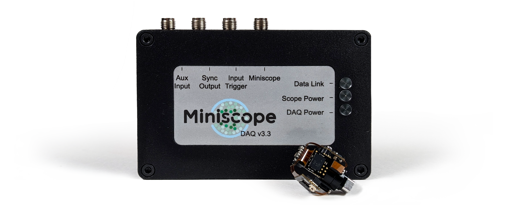

Miniscope-DAQ & UCLA Miniscope v4#
This guide serves as quick hardware-validation and familiarization with the UCLA Miniscope v4 and Miniscope-DAQ hardware.
Important
To validate ETL functionality or image a sample requires prior assembly of the UCLA Miniscope v4. If you have an unassembled UCLA Miniscope v4 and desire to validate ETL functionality or image a sample, follow the Assembly before following this Quick Start Guide.
Connect Hardware#
Todo
create the below images
Disconnect any previously connected hardware from Miniscope-DAQ and UCLA Miniscope v4. Connect only the following hardware for this guide:
Connect Miniscope-DAQ to the UCLA Miniscope v4 using the provided coaxial SMA plug ↔ MMCX plug tether:

Insert the cable’s SMA plug into Miniscope-DAQ’s SMA jack labeled Miniscope. Gently hand-tighten the SMA connector with light-force until you are no longer able to turn the connector

Insert the cable’s MMCX plug into UCLA Miniscope’s MMCX jack. Confirm that a click is felt and heard before proceeding from this step.

Connect Miniscope-DAQ to your computer using the provided USB3.0 Micro Type B plug ↔ USB3.0 Type A plug cable:

Insert the cable’s USB3.0 Micro Type B plug into the Miniscope-DAQ’s USB3.0 Micro Type B jack located on the Miniscope DAQ’s back face.

Insert the cable’s USB3.0 Type A plug into your computer’s USB3.0 Type A jack.

Confirm that all three indicators on the miniscope DAQ are illuminated before proceeding from this step as indicated in the below potos. If not all three indicators are illuminated, refer to FAQ, Troubleshooting & Additional Resources section.
Download, Install and Configure Bonsai#
If you have not already done so,
Install the necessary Bonsai Packages:
Bonsai.StarterPack
Bonsai.Miniscope
Download and open the following Bonsai workflow:
Interact with the UCLA Miniscope v4 through Bonsai#
Download and open the following .bonsai ile Bonsai workflow:
Start the Bonsai workflow and test the various features:
Single-left click on the UCLAMiniscopeV4 node. Depending on the cameras connected to your PC, the value in the Index field located in the Properties window may need to change. If there are no additional cameras connected to your PC, the Index value should be 0. If there are additional cameras connected to your PC (including laptop cameras), try incrementing the value of the Index field by 1 until the workflow functions as described in the following instructions. If the workflow does not work as described in the following instructions, return to this step and increment the value of the Index field by 1 until it works.
Note
Index refers to __.
Single-left click the start button at top or press F5 to start the workflow
Double-left click the Image node. This shows a real-time visualization of the data from the sensor. Expose the sensor to ambient light and obstruct the sensor from ambient light. Confirm that data visualization comports with light exposure.
Double-left click the Quaternion node. Single-right click the plot that appears and single-left click the drop-down menu. Set the value in the History Length field to 100. This shows real-time visualization of the orientation data from the sensor. Reorient the UCLA Miniscope v4 to confirm the visualization reflects orientation of the UCLA Miniscope v4
Single-left click the UCLAMiniscopeV4 node. Change the value of the FramesPerSecond field located in the Properties window by left clicking the field’s drop-down menu and selecting another option. To maximize SNR, the miniscope firmware always exposes the sensor to light. Therefore, exposure-per-frame is reduced at higher fps, and, as long as sensor data is not over- or under-exposed, the Image node visualizer may appear darker or brighter depending on the fps. Use this information or evaluate the choppiness/smoothness of the Image node visualizer to confirm that the video’s fps is adjusted.
Single-left click the UCLAMiniscopeV4 node. Change the value of the LEDBrightness field located in the Properties window by left clicking the field’s drop-down menu and sliding the scrollbar. Visually confirm that the LED brightness is adjusted.
For this step, avoid under- or over- exposing the sensor. Single-left click the UCLAMiniscopeV4 node. Change the value of the SensorGain field located in the Properties window by left clicking the field’s drop-down menu and selecting another option. Confirm that the data shown Image node visualizer is adjusted is amplified or attenuated depending respectively on if the sensor gain is increased or decreased.
To test the EWL, the UCLA Miniscope v4 must be fully assembled. After following the assembly guide, place the assembled miniscope approximately one millimeter away from a surface to be the subject of a miniscope image. The subject could be a table surface or a Kimwipe for instance. Single-left click the UCLAMiniscopeV4 node. Change the value of the EWL field located in the Properties window by left clicking the field’s drop-down menu and selecting another option. Confirm that the surface shown in the Image node visualizer is moved in and out of focus as the value of the EWL field is adjusted. If the surface is not entering the focus, try readjusting the distance of the miniscope from the surface and performing the test again. If the focus field of the optical system is not adjusted, try reassembling the EWL module and repeating this step.
Great! Your UCLA Miniscope v4 is fully functional. Silly hopefully not too cheesy way to end this guide